暮らしと、ちょっといいもの。
実際のレビューをもとに、暮らしを少し良くするアイテムと知恵をお届けします。
iPhoneバッテリー劣化の確認方法と寿命を延ばすコツ
iPhoneのバッテリー最大容量の確認方法や劣化の目安、充電サイクル数の見方、長持ちさせるための設定を、公式情報をもとにわかりやすく解説します。
2026-10-10
-
 便利家電・最新家電
便利家電・最新家電
ロボット掃除機が向いている部屋と向かない部屋の特徴
ロボット掃除機の導入を検討している方向けに、向いている部屋の条件と、段差・ラグ・コード類・階段などで注意が必要な部屋の特徴を整理して解説します。
2026-10-10
-
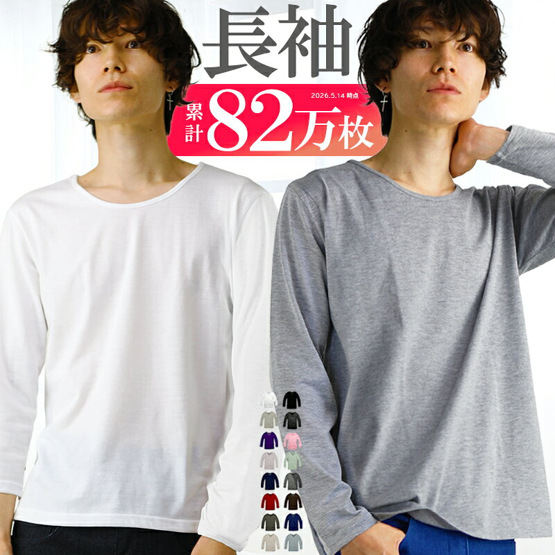
メンズファッション ・ PRメンズ長袖Tシャツ&ジャケット比較|レビューで選ぶ
メンズファッションの長袖Tシャツ・ロンT・テーラードジャケットを3点ピックアップし、レビュー評価や商品説明に基づいてそれぞれの特徴を比較紹介します。普段使いからオフィスまで使えるアイテム選びの参考にどうぞ。
2026-10-09
-
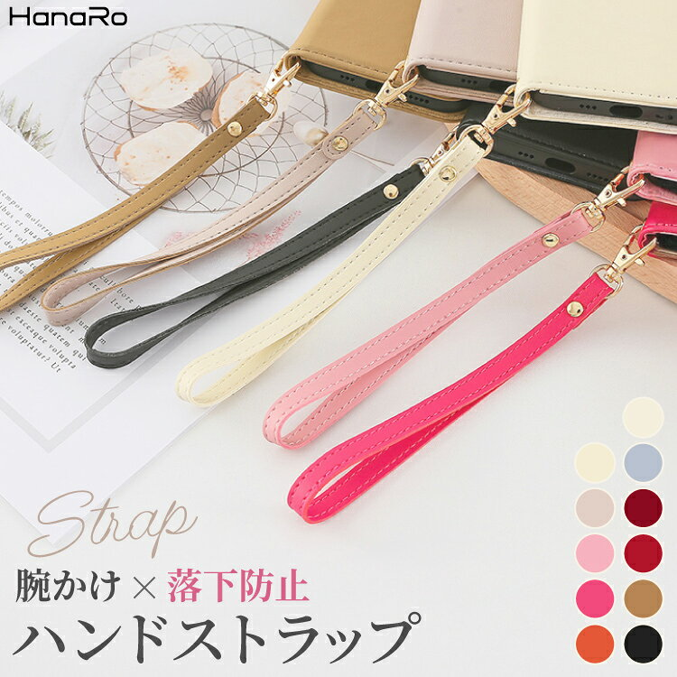
ガジェット ・ PRスマホアクセサリー比較 ストラップ&冷却ファン3選
スマホの落下防止に役立つハンドストラップ2種と、発熱対策に使える冷却ファンを比較しながら紹介する記事です。素材やサイズ、レビュー評価をもとに特徴をまとめました。
2026-10-09
-
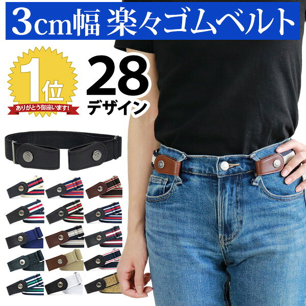
生活雑貨 ・ PR生活雑貨のおすすめアイテム比較 ベルト・耳かき・収納ラック
伸縮ベルトやLEDライト付き耳かき、浴室用のマグネット収納ラックなど、暮らしを少し便利にする生活雑貨3点を、価格やレビュー評価、使い方の特徴を交えて比較・紹介します。購入前の参考にどうぞ。
2026-10-08
-
キッチン
包丁の研ぎ方と保管のコツ｜切れ味を長持ちさせる方法
包丁の切れ味を保つための砥石を使った研ぎ方の基本と、サビを防ぐ日々の手入れ・保管方法を、具体的な手順とともにわかりやすく紹介します。
2026-10-08
-
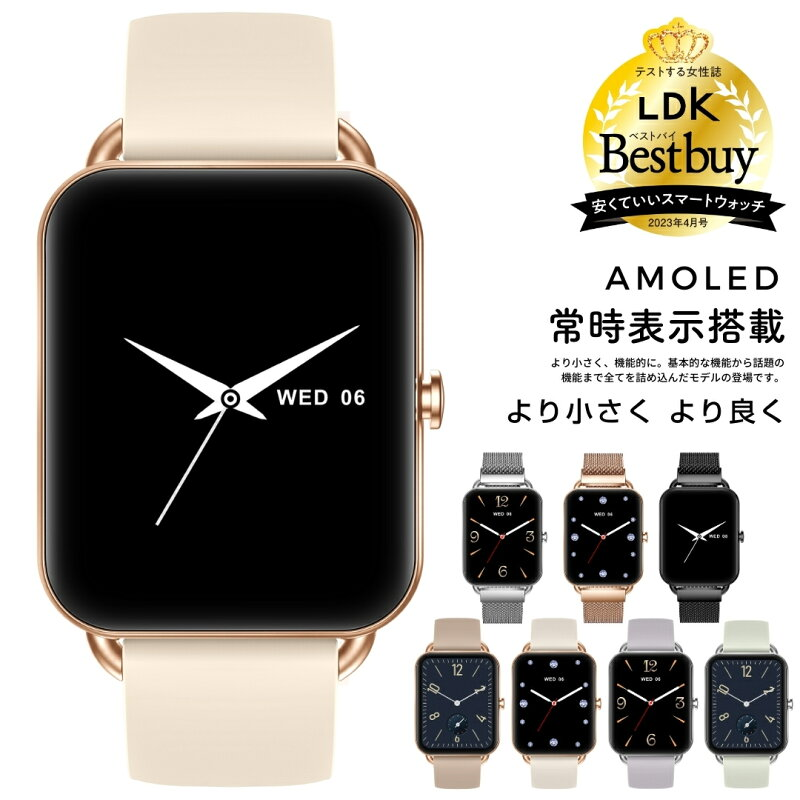
Huawei・中華ガジェット ・ PR中華ガジェットのスマートウォッチ3選、機能で比較
女性誌ベストバイ受賞モデル、知育にもなるキッズ向け、1.9インチ大画面モデルという3タイプのスマートウォッチを、搭載機能やレビュー評価の違いから比較しました。
2026-10-07
-
Apple最新情報
iOS26の便利機能まとめ｜着信スクリーニングやライブ翻訳の使い方
iOS26・iOS26.1で追加された着信スクリーニングやライブ翻訳、保留アシストなど実用的な新機能の使い方を、設定場所も含めてわかりやすく紹介します。
2026-10-07
-
 便利家電・最新家電 ・ PR
便利家電・最新家電 ・ PR
ノンフライヤーとフライパン徹底比較 便利家電の選び方
SAMKYO ノンフライヤーの2モデルとオールパンゼロのフライパンを、レビュー件数や評価を基準に比較。便利家電・最新家電を選ぶ際の参考情報としてまとめました。
2026-10-06
-
メンズファッション
靴下・インナーの清潔感を保つ洗濯と素材選びのコツ
靴下やインナーなど見えない部分の清潔感を保つための、素材選びや洗濯習慣、重曹・制汗剤といった手軽な対策を、調査した情報をもとに紹介します。においや黄ばみが気になる人はチェックしてみてください。
2026-10-06
-
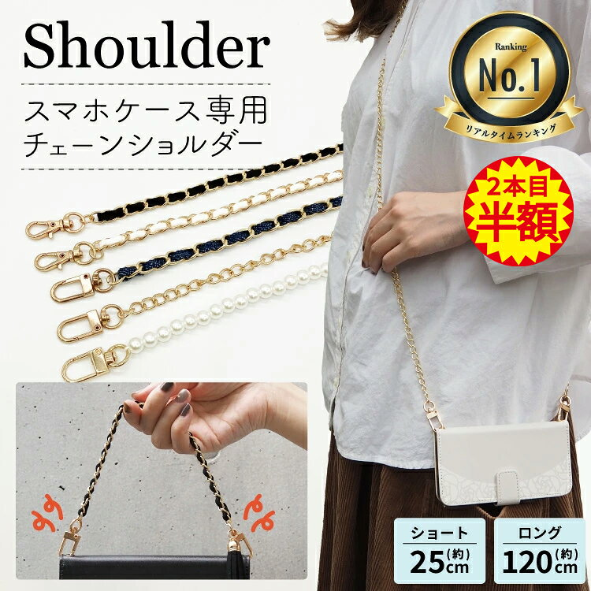
ガジェット ・ PRスマホを着替えさせる人気アクセサリー3選 比較ガイド
スマホショルダーストラップ、iFaceのMagSafe対応ケース、スワロフスキーのイヤホンジャックカバーを、価格とレビュー評価をもとに比較しながらご紹介します。
2026-10-05
-
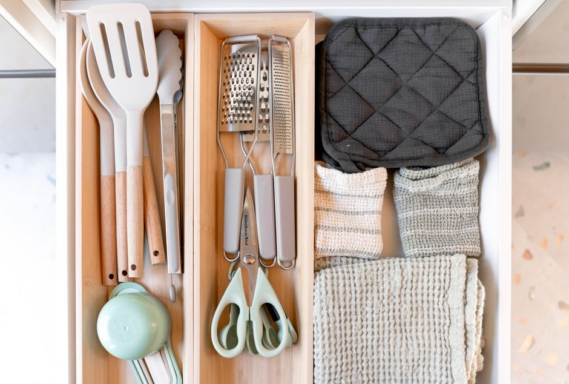
生活雑貨デスクの書類が片付く仕分けルール｜分類と保管のコツ
デスク周りに溜まりがちな書類を整理するための分類方法や仕分けルール、ラベリングのコツを紹介します。使用頻度に応じた保管場所の分け方も解説します。
2026-10-05
-
キッチン
自炊初心者が最初に揃えるべき調理器具と選び方
自炊を始めたばかりの方向けに、包丁やまな板、フライパン、鍋など最初に揃えたい調理器具の種類とサイズの目安、100均で済ませてよいものの見分け方を紹介します。
2026-10-04
-
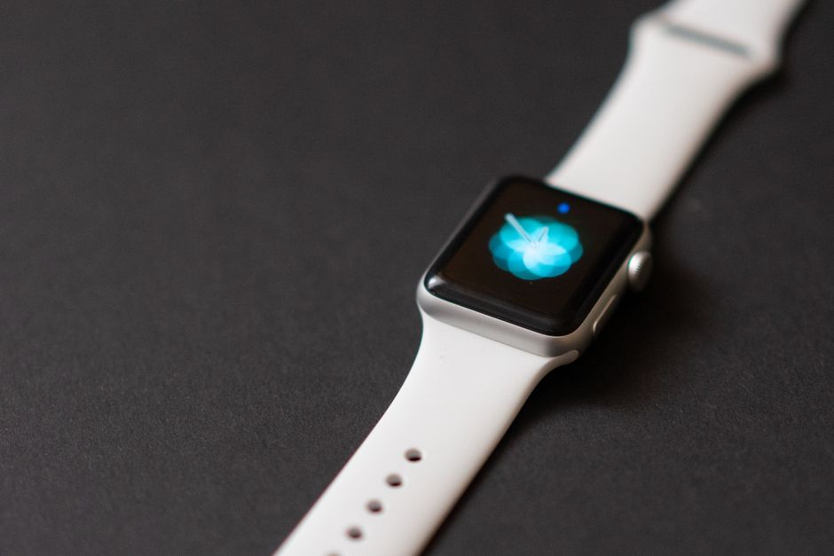
Huawei・中華ガジェット中華スマホ・ガジェット購入前に知りたい技適マークの基礎知識
中華スマホやガジェットを買う前に知っておきたい技適マークの基本、技適がない機器を使った場合の罰則、購入前・購入後にできる確認方法、180日の特例制度について総務省の情報をもとに解説します。
2026-10-04
-
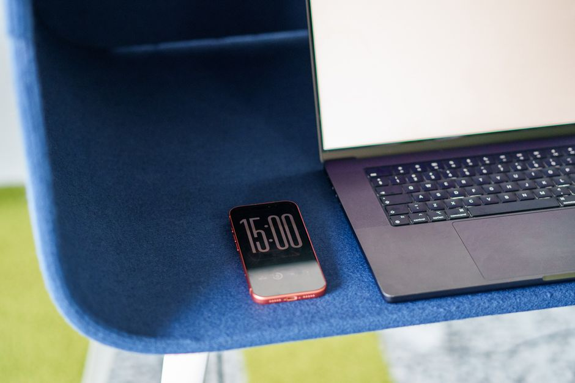
Apple最新情報iPhone17とiPhone16の違いを比較｜新機能と進化点まとめ
iPhone17シリーズはiPhone16から何が変わったのか。ディスプレイ、カメラ、チップ、バッテリーなど主な進化点を整理して紹介します。
2026-10-03
-
 便利家電・最新家電
便利家電・最新家電
統一省エネラベルの見方と家電別電気代比較のポイント
家電選びで目にする統一省エネラベルの多段階評価点や省エネ基準達成率の意味と、エアコン・冷蔵庫・照明・テレビなど家電ごとの年間電気代の目安の調べ方をまとめました。
2026-10-03
-
メンズファッション
男性のオフィスカジュアル服選び|失敗しない基本ルール
オフィスカジュアルで浮かないための服選びのポイントを解説。ビジネスカジュアルとの違いや色・トップス・シルエットの考え方、避けたいNGアイテムまで整理しました。
2026-10-02
-
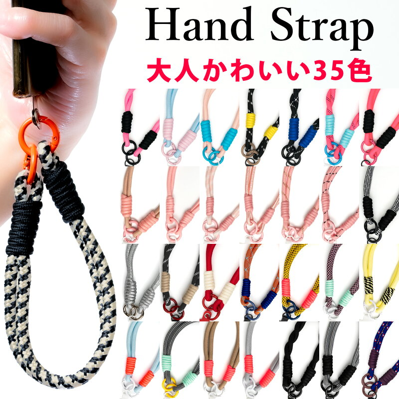
ガジェット ・ PRハンドストラップ型スマホストラップ3選を徹底比較
落下防止に役立つスマホ用ハンドストラップ3点を、素材・サイズ・レビュー評価などの実データをもとに比較しました。シンプルなタイプからホルダーセット、カラー豊富な編み込みタイプまで紹介します。
2026-10-01
-
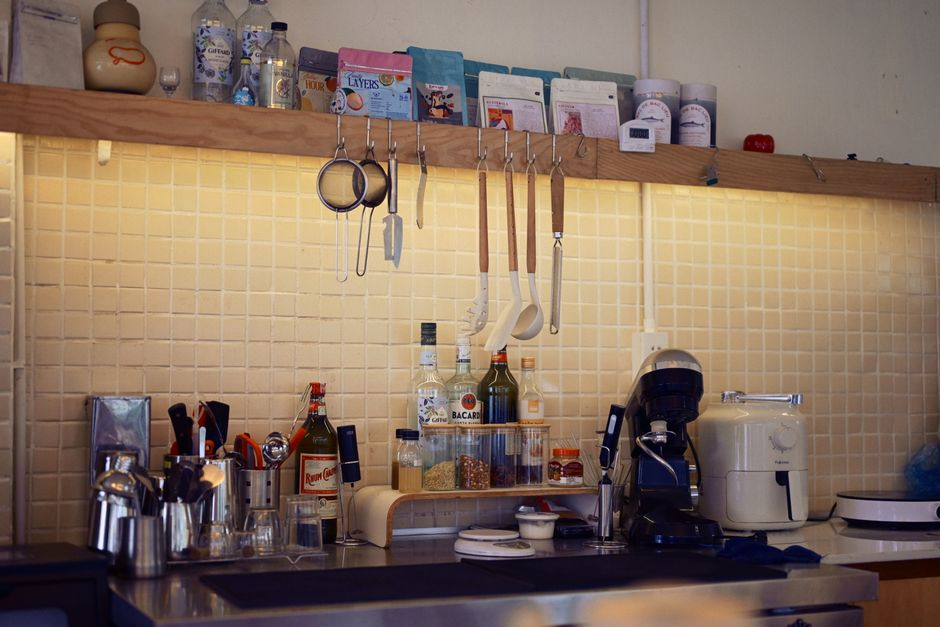
生活雑貨スマホのバッテリーを長持ちさせる充電方法と注意点
スマホやガジェットのバッテリーを長く良い状態で使うための充電タイミングや発熱対策、最適化機能の活用法、保管時の注意点を根拠とともに紹介します。
2026-10-01
-
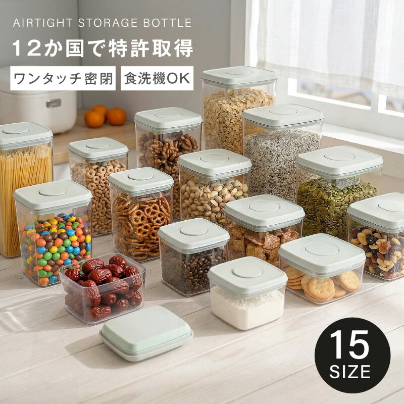
キッチン ・ PR保存ボトルと福袋フライパンで整えるキッチン術3選
真空保存ボトルとフライパン・鍋の福袋、ヒートシーラーという3つのキッチンアイテムを、価格とレビュー評価をもとに比較しながらご紹介します。
2026-09-30
-
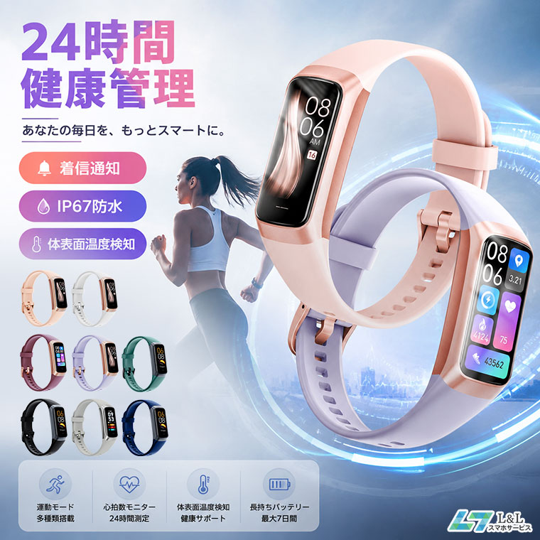
Huawei・中華ガジェット ・ PR楽天で人気の格安スマートウォッチ3選を徹底比較
楽天で人気の高いスマートウォッチ3機種を、価格・レビュー評価・素材やディスプレイサイズなどの商品データをもとに比較しました。選ぶ際の参考にしてください。
2026-09-30
-
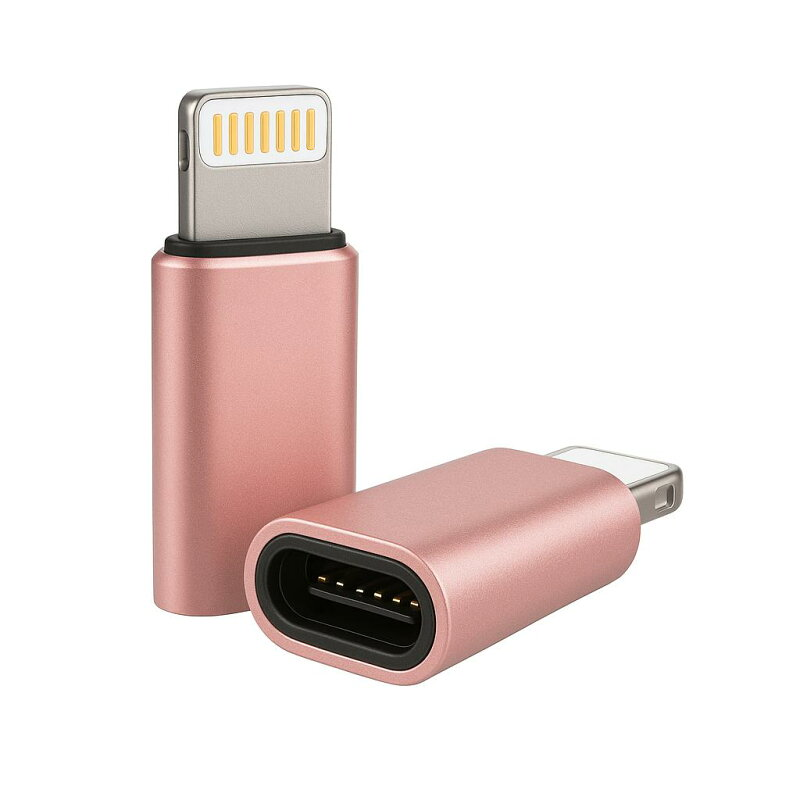
Apple最新情報 ・ PRタイプC→ライトニング変換コネクタ3色比較｜iPhone向け
iPhoneでタイプCケーブルを使うための変換コネクタを、ピンク・シルバー・ブラックの3色で比較。価格はいずれも580円、レビュー評価や説明文の内容をもとに違いを整理しました。
2026-09-29
-
 便利家電・最新家電 ・ PR
便利家電・最新家電 ・ PR
時短家電で選ぶ人気家電比較 スープメーカーと掃除機編
忙しい毎日の家事負担を減らしたい方向けに、レビュー件数と評価が多いスープメーカーとロボット掃除機2機種を、価格帯やレビュー実績をもとに比較紹介します。
2026-09-29
-
メンズファッション
秋の季節の変わり目に効く羽織り・重ね着のコツと選び方
朝晩の気温差が大きい季節の変わり目に役立つ、羽織りと重ね着の考え方を紹介します。気温の目安や色・素材の組み合わせ方、便利なカーディガンの活用法などをまとめました。
2026-09-28
-
ガジェット
在宅ワークが捗るデスク周りガジェット活用術【2026年版】
在宅ワークの生産性を高めるデスク周りガジェットを、入力デバイス・モニターアーム・USBハブ・Web会議機器・充電収納の5つの観点からご紹介します。
2026-09-28
-
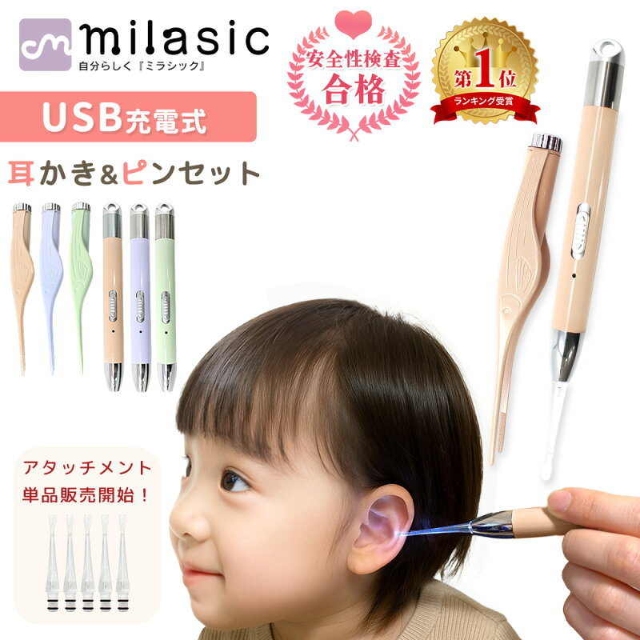
生活雑貨 ・ PR生活雑貨のおすすめアイテム比較 耳かき・福袋・バッテリー3選
耳かき、日用品福袋、モバイルバッテリーという毎日の暮らしに役立つ生活雑貨3点を、価格とレビュー評価をもとに比較しながら紹介します。
2026-09-27
-
キッチン
キッチンの排水口・シンク下のニオイとカビ対策まとめ
キッチンの排水口・シンク下・生ゴミ・換気扇に発生しやすいニオイとカビについて、原因と重曹やクエン酸、アルコールなどを使ったお手入れ方法、換気の工夫をわかりやすく紹介します。
2026-09-27
-
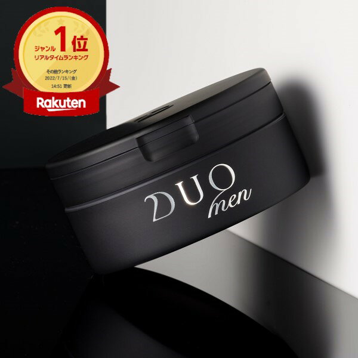
メンズ美容 ・ PRメンズ美容比較 洗顔料と目元ケアのおすすめ3選
毎日の洗顔からスペシャルケアまで、レビュー評価の高いメンズ美容アイテム3点を商品説明をもとに比較しました。忙しい方にも取り入れやすいアイテムを紹介します。
2026-09-26
-
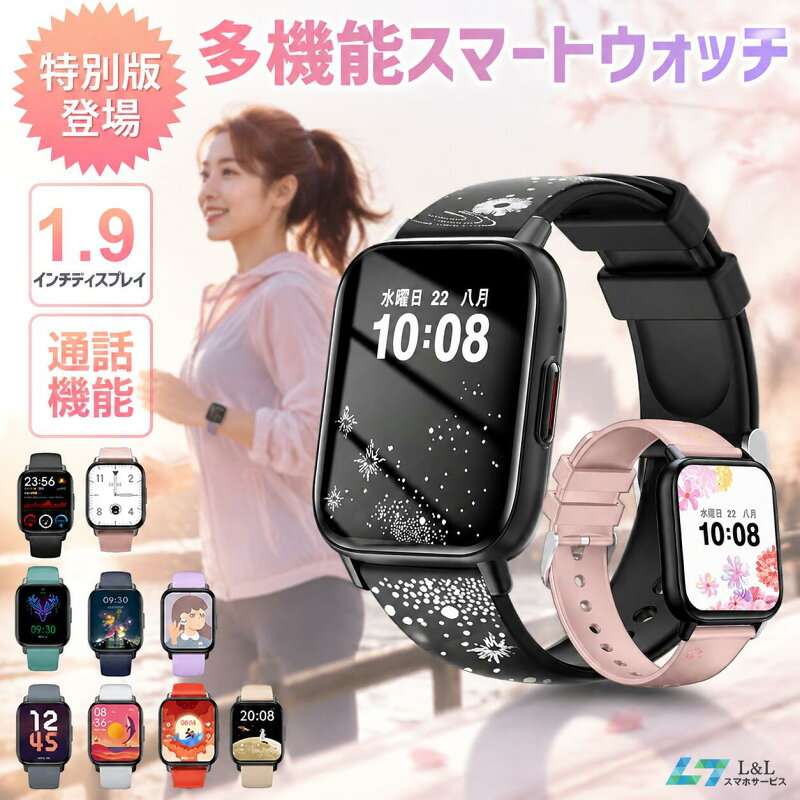
Huawei・中華ガジェット ・ PR中華ガジェット系スマートウォッチ3機種を徹底比較
Huawei・中華ガジェットジャンルで人気のスマートウォッチ3機種を比較。防水性能や通話機能、バンドの種類、レビュー件数など実際の商品データをもとに特徴を紹介します。
2026-09-26
-
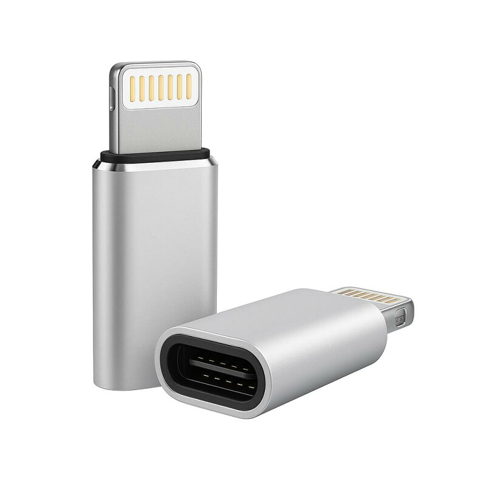
Apple最新情報 ・ PRiPhone周辺で使える変換アダプター＆チャーム比較3選
iPhoneまわりで役立つType-C to Lightning変換アダプターと、バッグやスマホに合わせやすいチャーム2種を、価格帯やレビュー評価をもとに比較紹介します。
2026-09-25